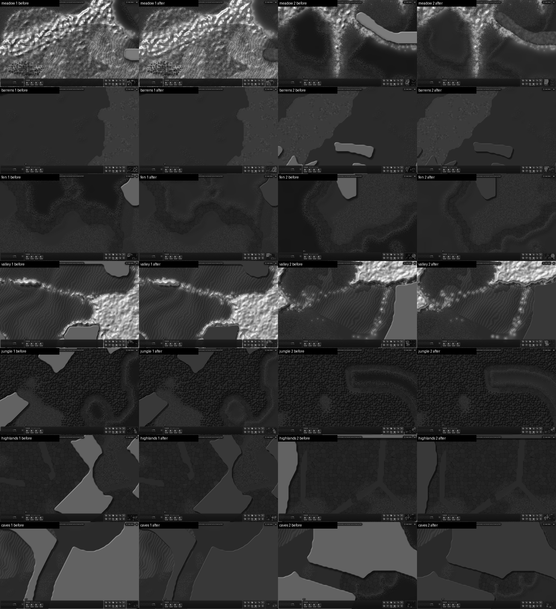
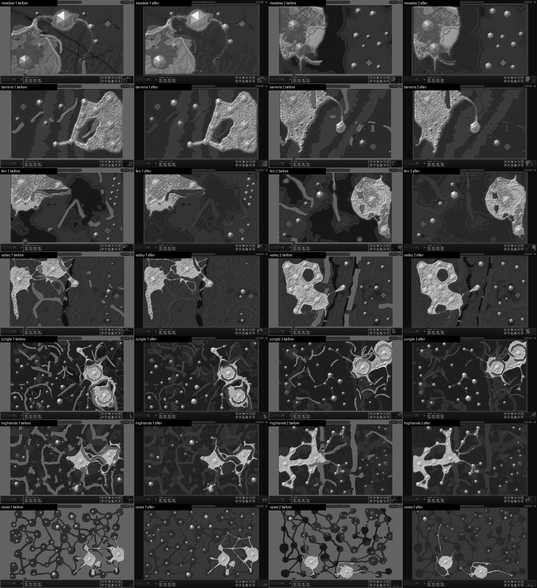
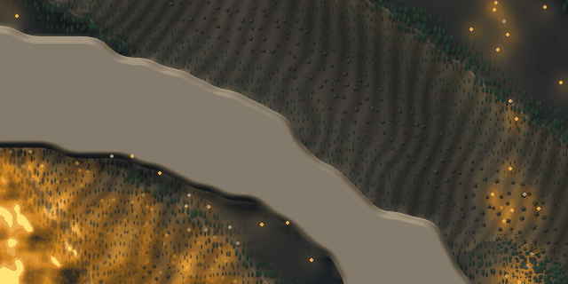
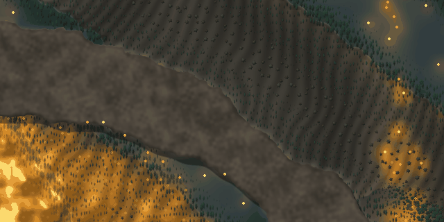
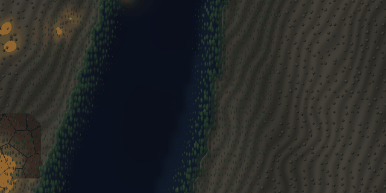
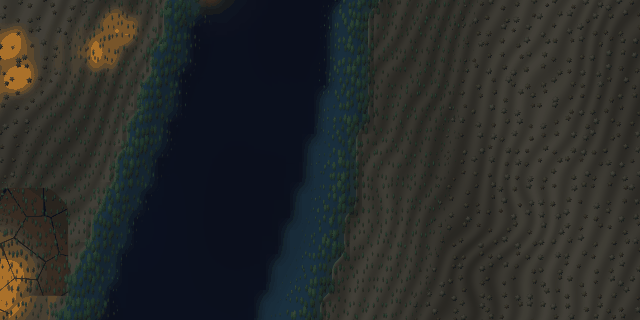
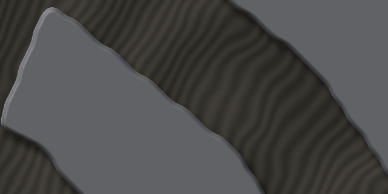
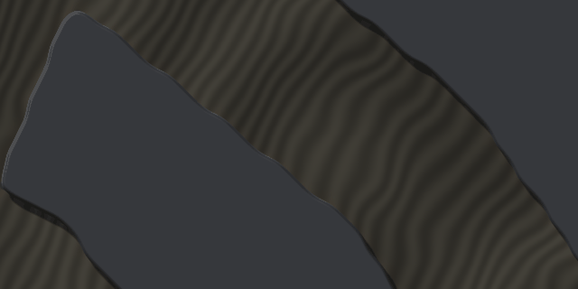
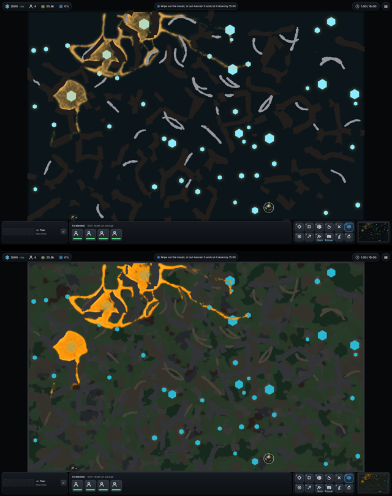

The planet review asked for one grey order everywhere: ground 20-45, rock 50-60, soft rock 60-72, thin slime 80 and up, crystals 110 and up, and thick slime 140 and up. Rock and soft rock were the brightest ground at 98-123 and sat above thin slime. Now rock is at 41-56, and soft rock is at 39-67, darkening with damage. Crystals reach 110 on 11 of 14 maps. Shallow water is 22 above deep. Hedges are lumpy and grained, the rock bevel is crisp, the backdrop is darker than cave rock, and the far view and minimap use the shaded materials.
The reviewer's measure.py, run on the same views (identity view at zoom 12 and whole map, 1 s and 60 s, 1280x800). Each cell is grey luma, before / after.
| Planet, seed | film p10 | slime p50 | thick p90 | rock | soft rock | crystal | brightest ground p90 |
|---|---|---|---|---|---|---|---|
| 1 meadow, 1 | 71 / 70 | 97 / 93 | 149 / 149 | 98 / 56 | 123 / 66 | 109 / 131 | 81 / 74 |
| 1 meadow, 2 | 68 / 71 | 97 / 104 | 134 / 142 | - / - | 123 / 39 | 126 / 101 | 51 / 56 |
| 2 barrens, 1 | 86 / 93 | 127 / 141 | 182 / 194 | 98 / 56 | 123 / 59 | 121 / 114 | 59 / 60 |
| 2 barrens, 2 | 85 / 85 | 127 / 126 | 181 / 179 | 98 / 56 | - / - | 113 / 114 | 60 / 60 |
| 3 fen, 1 | 66 / 72 | 114 / 116 | 160 / 163 | 98 / 51 | 122 / 58 | 123 / 120 | 51 / 56 |
| 3 fen, 2 | 66 / 83 | 108 / 116 | 172 / 172 | 98 / 56 | 123 / 67 | 111 / 119 | 59 / 56 |
| 4 valley, 1 | 65 / 71 | 107 / 109 | 180 / 183 | 98 / 56 | 123 / 65 | 122 / 113 | 57 / 99 |
| 4 valley, 2 | 74 / 78 | 151 / 153 | 190 / 193 | 98 / 56 | - / - | 102 / 128 | 57 / 59 |
| 5 jungle, 1 | 49 / 56 | 114 / 113 | 190 / 191 | 98 / 41 | 123 / 51 | 116 / 112 | 87 / 64 |
| 5 jungle, 2 | 51 / 55 | 114 / 113 | 190 / 191 | 98 / 49 | 123 / 44 | 106 / 116 | 123 / 68 |
| 6 highlands, 1 | 63 / 67 | 111 / 114 | 193 / 192 | 98 / 56 | 107 / 59 | 106 / 120 | 51 / 51 |
| 6 highlands, 2 | 64 / 68 | 112 / 114 | 194 / 193 | 98 / 56 | 123 / 66 | 96 / 118 | 49 / 49 |
| 7 caves, 1 | 56 / 68 | 120 / 118 | 196 / 194 | 98 / 56 | 98 / 56 | 93 / 109 | 61 / 56 |
| 7 caves, 2 | 51 / 64 | 100 / 104 | 193 / 191 | 98 / 56 | 98 / 56 | 94 / 105 | 56 / 56 |
The review's film p10 counts the veins' cast shadow on the ground beside them. That is why it stays below 80 on most maps. It now beats rock and soft rock on every map; highlands 2 is the narrowest, 68 against 66. Crystals are still under 110 on meadow 2 (101), caves 1 (109) and caves 2 (105). Valley 1's 99 ground value comes from the edge pixels of a small clay patch.
Film p10/p25, counting only pixels that are slime-coloured at 60 s (R-B over 45). 10 of 14 maps are at 80 or above.
| Planet-seed | before → after |
|---|---|
| 1-1 | 82/92 -> 83/94 |
| 1-2 | 82/91 -> 81/95 |
| 2-1 | 97/115 -> 100/120 |
| 2-2 | 90/107 -> 95/110 |
| 3-1 | 79/101 -> 87/105 |
| 3-2 | 83/100 -> 87/104 |
| 4-1 | 76/95 -> 80/93 |
| 4-2 | 108/134 -> 107/134 |
| 5-1 | 71/100 -> 78/100 |
| 5-2 | 68/91 -> 72/94 |
| 6-1 | 70/86 -> 74/93 |
| 6-2 | 76/107 -> 81/108 |
| 7-1 | 74/102 -> 84/103 |
| 7-2 | 68/88 -> 77/92 |
Identity views at 60 s, in grey. Each map is shown before and after, side by side.


Hedges lose the tube shading and get a lumpy edge and grain. Rock drops into the rock band, and the bevel is at most 5 px.


Shallow water is 38 and deep water 15-16 (shallow was 22).


Rock is 56, down from 98, a step above the 42-51 ground.


Planet 8 at zoom 0.86, before on top and after below. Below zoom 1, each cell is now drawn with the shaded view's materials (soil, water depth, plants, rock, crystals) instead of the old flat palette. The minimap uses the same path.

Each biome gets its own ground micro-look at zoom 12 (review item 3). This needs the biome passed to the view.